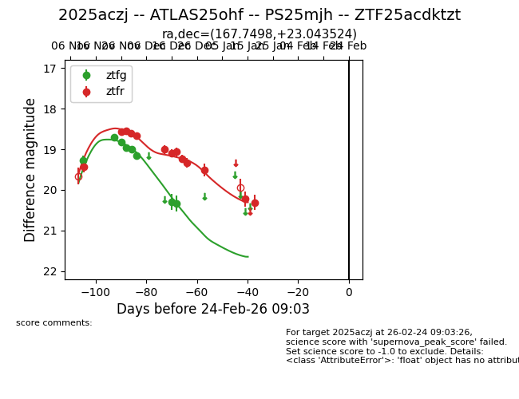
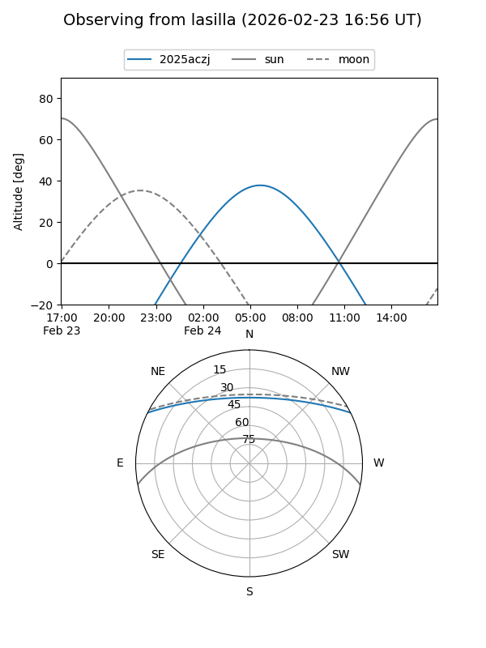
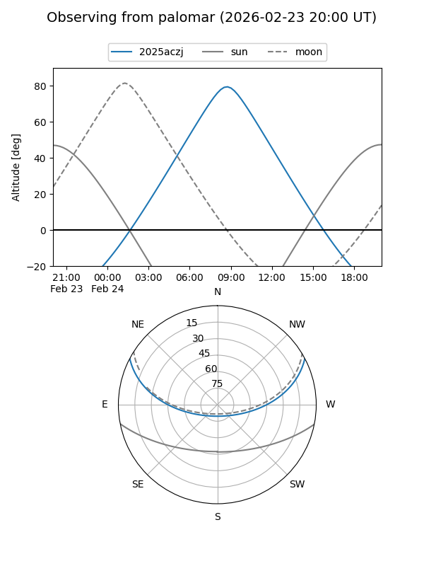
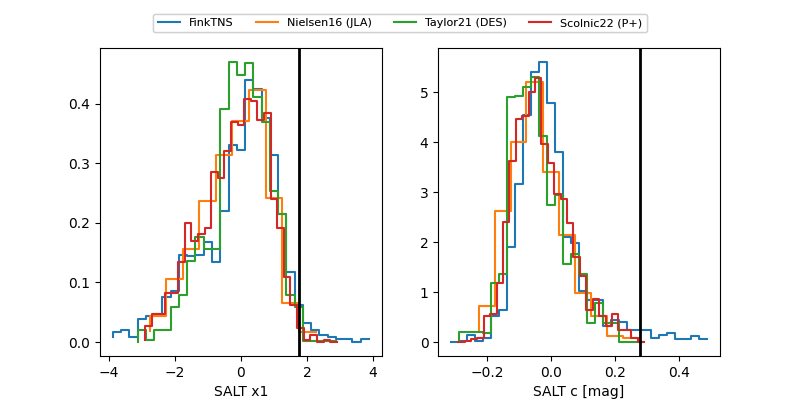

2025aczj
Target 2025aczj at 2026-01-27 08:41
Aliases and brokers:
FINK: link
Lasair: link
ALeRCE: link
TNS: link
YSE: link
alt names
ZTF25acdktzt (ztf,fink_ztf)
2025aczj (tns,yse)
ATLAS25ohf (atlas)
PS25mjh (panstarrs)
Coordinates:
equatorial (ra, dec) = 167.7498,+23.04352
equatorial (HMS+DMS) = 11:10:59.95,+23:02:36.69
galactic (l, b) = (217.5552,+66.93548)
Flags:
Photometry:
last ztfg=20.34, ztfr=20.31
8 ztfg, 13 ztfr detections
Lightcurve

Visibility


Additional plots
